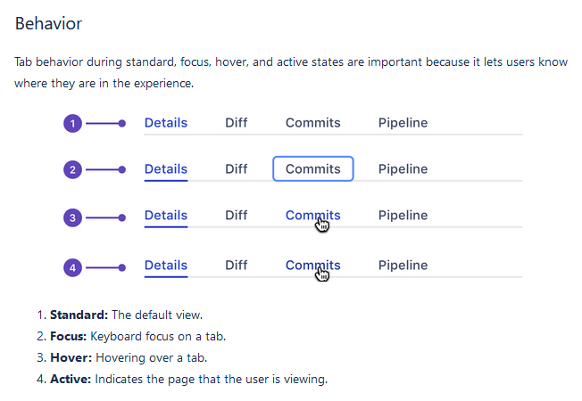

    <h2>How to Handoff</h2>
    <p>If you make a hover state, also make a focus state

    <h2>Examples</h2>
    <ul>
      <li><a href="https://codepen.io/feather/full/wNwNQZ">Focus styling examples by Derick Featherstone</a>
      <li><a href="https://atlassian.design/guidelines/product/components/tabs">Focus styles in Product</a> (see image below)
    </ul>

    